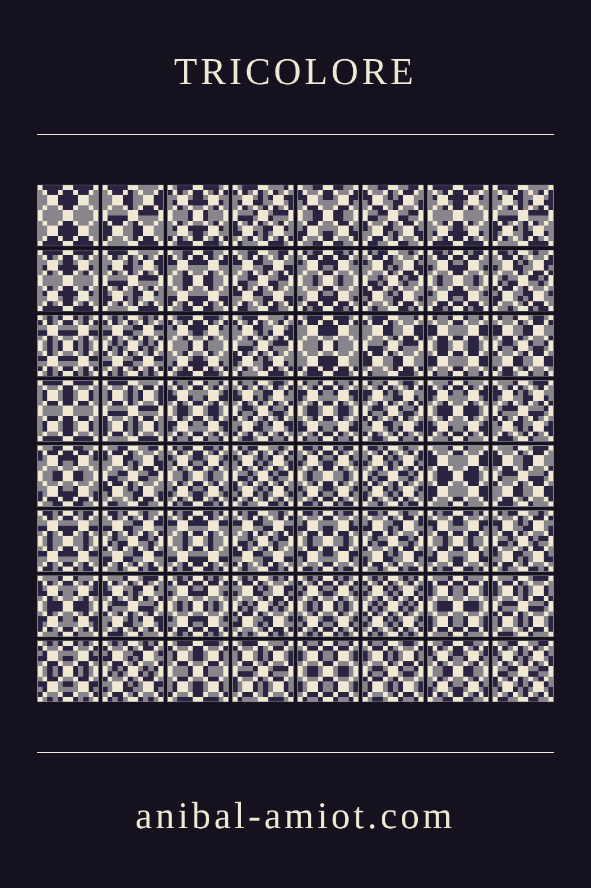
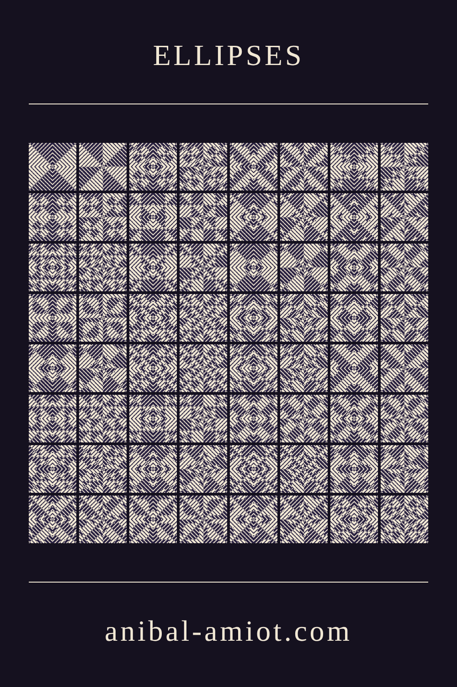
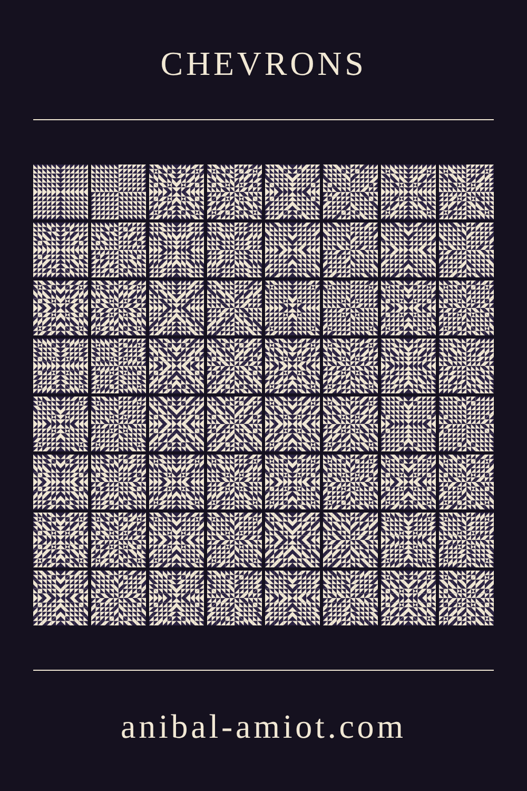
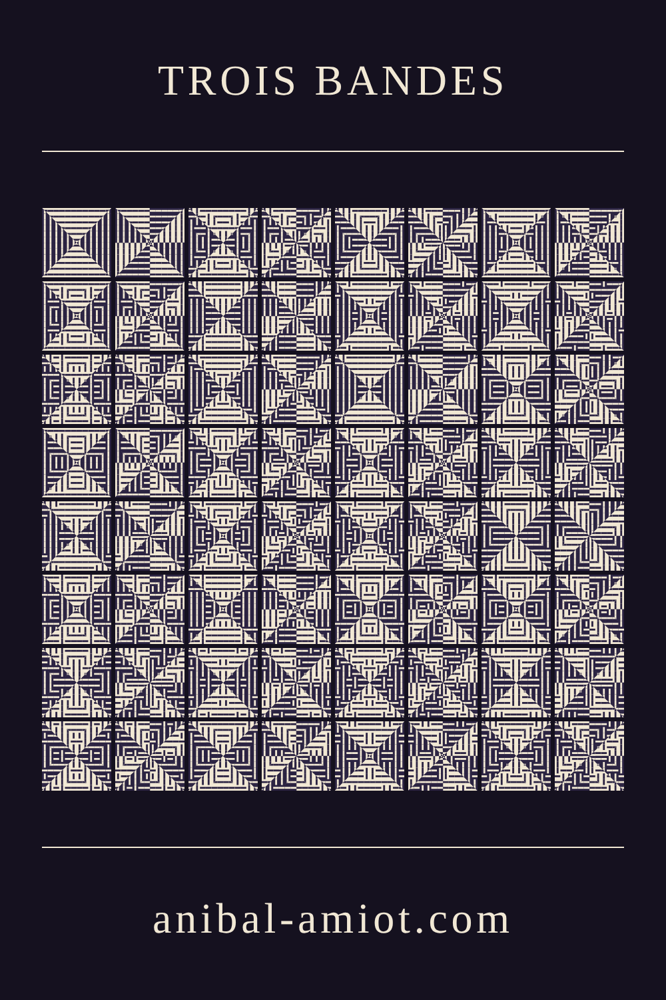
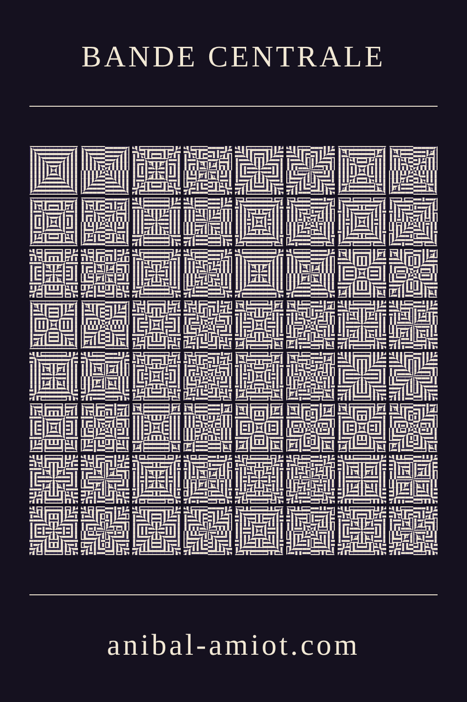
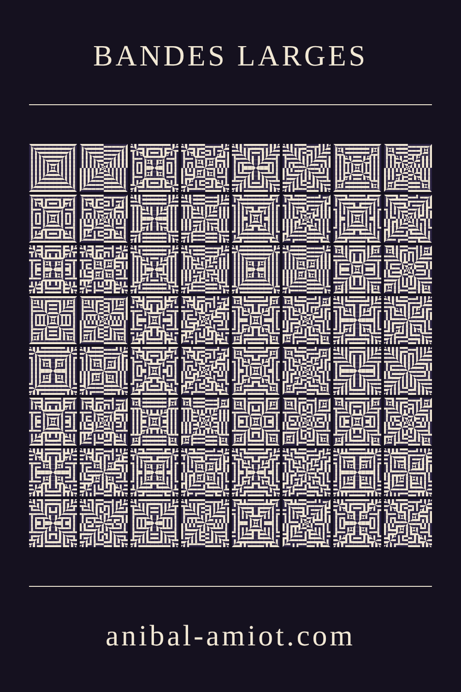
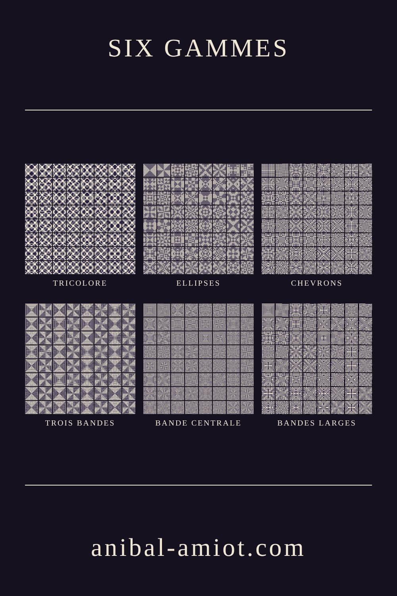

Autres langues : English
Les gammes
Soixante-quatre motifs : le représentant de chacune des 64 classes du corpus de 256 grilles de 12 × 12 cases, rangés dans l'ordre King Wen. Chaque affiche les lit d'une manière différente : une en trois tons, cinq en deux tons.














Comment lire une affiche
Chaque affiche porte 8 × 8 carrés, un par classe. On les lit de gauche à droite et de haut en bas, dans l'ordre King Wen : le premier carré est en haut à gauche, le soixante-quatrième en bas à droite.
Bientôt
Une application, « Voir sa musique », et un livre papier sont en préparation. Rien n'est encore annoncé : ni date, ni prix, ni lien d'achat. Pour être prévenu autrement, écrivez-moi. Contacter l'auteur
Images sous licence CC BY-NC 4.0. Le corpus de 256 grilles est en accès libre : doi.org/10.5281/zenodo.24396534 (DOI de concept).